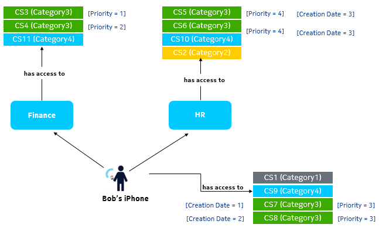
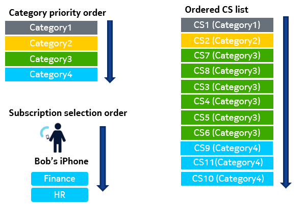
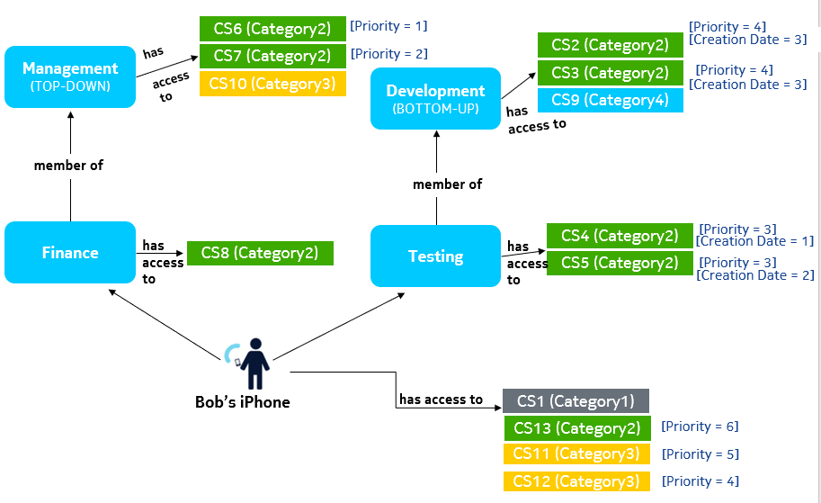
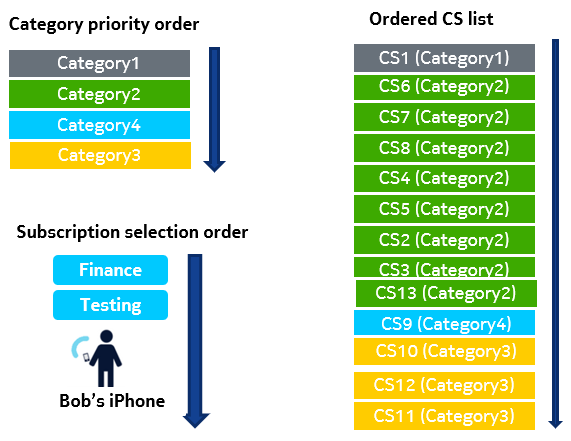
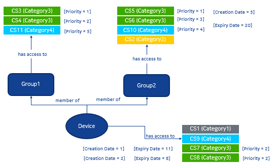
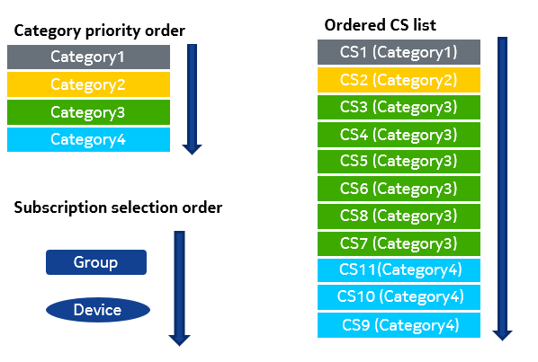

Following steps provide the configuration details to implement the subscription
selection feature:
-
To provision multiple categories, update the category order entity to
specify the sequence of category usage. For example,
Cat2, Cat3,
Cat1, Cat4, and
DefaultCategoryOrder.
-
Create a charging service based on the following conditions:
-
If no other category is associated with the charging service,
then the DefaultCategoryOrder, created at the time of NCC
installation, is the only category associated with it.
-
If a charging service is created with other categories as well,
then it can select from one of the available categories
configured in the category order entity.
-
Create devices based on the following criteria:
-
If devices are created without category order, then the entire
category list, for example, Cat2,
Cat3, Cat1,
Cat4, and
DefaultCategoryOrder is copied to the
device category list.
-
If devices are created with category order, then you must define
the order of all available categories, for example,
Cat2, Cat3,
Cat1, Cat4, and
DefaultCategoryOrder.
Example 1: When a device belongs to several groups without group
hierarchy
Provisioning:
-
Associate an iPhone to two groups Finance and
HR, which are further associated to several
categories.
Associate each charging service with a creation date and priority as
shown in the following figure:
-
Set the Subscription Selection Order = DEVICE_FIRST in Device entity and
application preference CS Selection Order = ON_CREATION_TIME.
-
When a device executes a data call, then the subscriptions are selected
depending on the given factors:
-
Category order priority
-
Subscription selection order
-
Charging service priority
-
Charging Service Instance Creation Time (based on application
preference CS Selection Order = ON_CREATION_TIME)

Note:
If all the subscription selection criteria are same, then whichever charging
service instance comes first, is picked first.
Result:
When the iPhone executes a data call, then the subscriptions are selected in the
given sequence:
-
As Category1 has the highest priority, it is the first
category to be fetched when a call is executed. CS1
is the only charging service that belongs to
Category1. Therefore, CS1
comes first in ordered charging service list.
-
Category2 has the second highest priority associated
with only one charging service CS2. Therefore,
CS2 comes next after CS1 in
the ordered charging service list.
-
Category3 has the third highest priority. As both
Finance and HR groups, and
iPhone have charging service corresponding to
Category3, the subscription selected order is
considered.
Therefore, first Device is considered, followed by Finance Group and then
HR group since the Subscription Selection Order =
DEVICE_FIRST and Finance Group is associated with Device before
HR group.
-
For iPhone, Category3 is associated with two
charging services; CS7 and
CS8. As both CS7 and
CS8 have same charging service priority,
the order of charging service is decided by the charging service
instance creation date. Since CS7 charging
service instance was created before CS8,
CS7 charging service is considered
first.
-
For the Finance group,
Category3 is associated with two charging
services; CS3 and CS4. The
order of charging service is decided by the charging service
priority. Therefore, CS3 with higher priority
is considered first followed by CS4.
-
For HR group, Category3 is
associated with two charging services; CS5
and CS6. Since both CS5
and CS6 have same charging service priority
and same charging service instance creation date, whichever
charging service comes first is picked first.
-
The same process, which has been defined for
Category3, is followed for
Category4.
-
Pass 0 of all the charging services are executed first followed
by Pass 1 of all charging services. For example:
Example 2: When a device belongs to several groups with group
hierarchy
Provisioning:
-
Associate an iPhone device to two groups Finance,
which is a member of the Management group and
Testing group, which is a member of the
Development group.
-
Associate all four groups with several categories.
-
Associate each charging service with a creation date and priority as
shown in the following figure:


-
Set the Subscription Selection Order =
GROUP_FIRST in Device entity and application
preference CS Selection Order =
ON_CREATION_TIME.
Result:
When the iPhone executes a data call, then the subscriptions are selected in the
given sequence:
-
As Category1 has the highest priority, it is the first
category to be fetched when a call is executed. CS1
is the only charging service that belongs to
Category1. Therefore, CS1
comes first in ordered charging service list.
-
Category2 has the second highest priority. As both
Finance and Testing groups,
and iPhone have charging service corresponding to
Category2, the subscription selected order is
considered.
Therefore, first Finance group is considered, followed
by the Testing group, and then Device since
Subscription Selection Order = GROUP_FIRST
and Finance Group is associated with Device before HR
group.
-
Finance group is part of a hierarchy with
Management group as the top node.
Therefore, Management group defines the
traversal order for this hierarchy which in this case is
top-down. This implies that the subscriptions of
Management group comes first followed by
the subscriptions of Finance group.
-
Management group is associated with two
charging services; CS6 and
CS7 from Category2.
The order of charging service is decided by the charging service
priority. Therefore, CS6 with higher priority
is considered first followed by CS7.
-
Finance group is associated with only one
charging service CS8 from
Category2 comes next.
-
Testing group is part of a hierarchy with
Development group as the top node.
Therefore, Development group defines the
traversal order for this hierarchy which in this case is
bottom-up. This implies that the subscriptions of
Testing group comes first followed by the
subscriptions of Development group.
-
Testing group is associated with two charging
services; CS4 and CS5 from
Category2. As both CS4
and CS5 have same charging service priority,
the order of charging service is decided by the charging service
instance creation date. Since CS4 charging
service instance was created before CS5,
CS4 charging service is considered
first.
-
Development group is associated with two
charging services; CS2 and
CS3 from Category2.
Both CS2 and CS3 charging
services have same charging service priority and creation date.
So, whichever comes first is picked first.
- The iPhone has one CS (CS13). Hence, CS13 is picked next.
-
Category4 has the third highest priority and only
Development group associated with one charging
service CS9 which gets selected next.
-
Category3 has the next priority and both iPhone and
Management group have charging services from this
category. The subscription selection order is considered. Here,
Finance group comes first followed by iPhone.
-
Management group belongs to the hierarchy
from which Finance group comes. So,
Management group charging service, that
is, CS10 is picked next.
-
iPhone is associated with two charging services;
CS11 and CS12 from
Category3. The next criterion for order
is considered, that is, charging service priority. Since
CS12 has higher priority than
CS11, CS12 is
considered first followed by CS11.
-
Pass 0 of all the charging services are executed first followed
by Pass 1 of all charging services. For example:
Pass 0: CS1 -> CS6 ->
CS7 -> CS8 ->
CS4 -> CS5 ->
CS2 -> CS3 ->
CS13 -> CS9 ->
CS10 -> CS12 ->
CS11
Pass 1: CS1 -> CS6 ->
CS7 -> CS8 ->
CS4 -> CS5 ->
CS2 -> CS3 ->
CS13 -> CS9 ->
CS10 -> CS12 ->
CS11
Example 3: When a device belongs to several groups and expiry date is used
for sorting
Provisioning:
-
Associate an iPhone to two groups Group1 and
Group2.
Given that Group1 is attached to device before
Group2. Therefore, sorting of Group
1 is done first followed by Group2.
Set the Subscription Selection Order =
GROUP_FIRST in the Device entity and application
preference CS Selection Order = ON_END_TIMEfor
the charging service as shown in the following figure:


-
When the iPhone executes a data call, then the subscriptions are selected
depending on the given factors:
-
Category order priority
-
Subscription selection order
-
Charging service priority
-
Charging service instance expiry date (based on application
preference CS Selection Order =
ON_END_TIME)
Note:
If all the subscription selection criteria are same, then whichever charging
service instance comes first, is picked first.
Result:
When the iPhone executes a data call, then the subscriptions are selected in the
given sequence:
-
As Category1 has the highest priority, it is the first
category to be fetched when a call is executed. CS1
is the only charging service that belongs to
Category1. Therefore, CS1
comes first in the charging service list.
-
Category2 has the second highest priority associated
with only one charging service CS2. Therefore,
CS2 comes next after CS1 in
the charging service list.
-
Category3 has the third highest priority.
CS3 and CS4 are sorted first
as per priority because Group1 was attached to device
before Group2. Since CS5 has
higher priority than CS6, CS5 is
picked first. CS7 and CS8 are from
device, therefore, sorted at the end of Category3. As
priority is same, they are sorted based on the expiry date. Since
CS8 expiry is before CS7,
CS8 is picked first.
-
Category4 has the fourth highest priority.
CS11 is sorted first. CS10 is
sorted next as per priority in Group2 followed by
device CS9. This is because,
Group_First is selected in device and
Group1 was attached to device before
Group2.